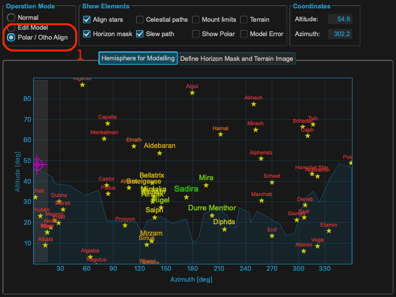
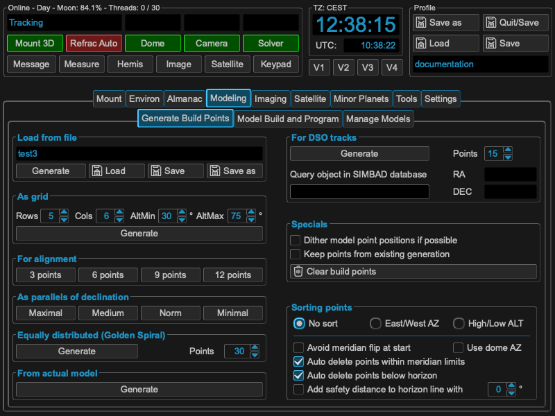
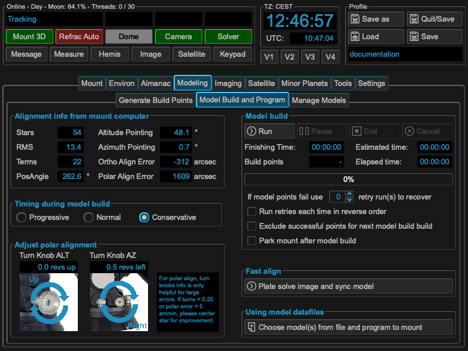
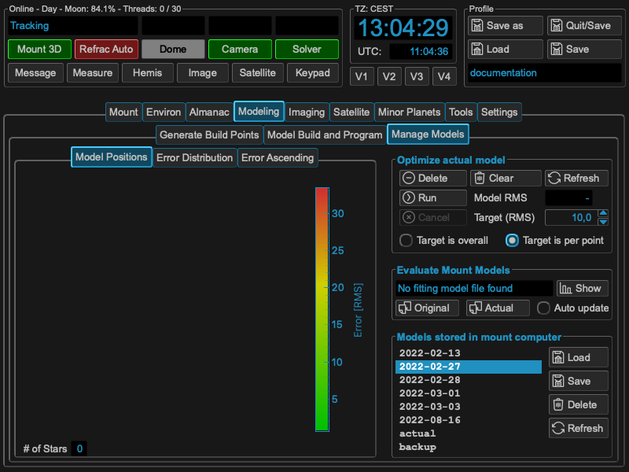

Modeling¶
Overview¶
I only focus on model building with tool support, so no words about manual model building. I don’t know the internal algorithms of the 10micron mount how the calculate their corrections. So many of the hints derive from pure logical or mathematical approaches and even there I personally might have some misconceptions or make some errors.
So my goal in model building is quite simple: I’m lazy in doing setups, so I want a solutions which gives me a correction model most accurate in minimum of time automatically. I rely heavily on the corrections capability on the 10micron mounts, so I use them always with dual tracking on. For doing a setup there are many things to think of beside the model (leveling, rigidity etc.). Keep them perfect, but I don’t talk about them. So this results in two tasks I have to do to get a model to do unguided images: Polar alignment and the model for correction itself. I refer to the Blog Filippo Riccio from 10micron:
https://www.10micron.eu/forum/viewtopic.php?f=16&t=846
All the hints you get from the mount (how to turn knobs, alignment star) improve the alignment. As the model is only an approximation for the error correction, it will be not an one step approach. If you aim for the best result, please think of 2-3 iterations of the whole procedure. In my setup I normally need 2 iterations for doing an alignment which is good for 20-30 min exposures and have round stars.
As Overview: MountWizzard4 has a straight forward approach for building models. The following chart shows each basic step.
{kind=link}

The following sections describe each step in detail:
Step 1: Polar alignment¶
Detailed description: Polar align your mount
{kind=link}

Step 2: Selecting build points¶
Detailed description: Selecting build points
{kind=link}

Step 3: Running the model build¶
Detailed description: Build a model
{kind=link}

Step 4: Managing mount models¶
Detailed description: Managing mount models
{kind=link}
